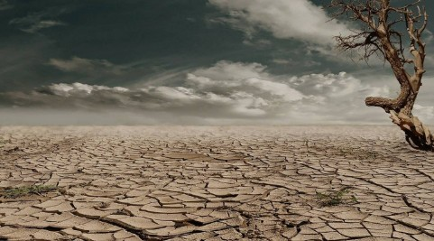
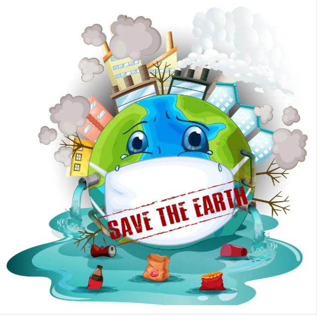

EFFECTS :
- ACID RAINS

- DROUGHTS 
- EFFECT OF MARINE SYSTEM


|  | SAVE EARTH |
Water pollution is the contamination of water bodies, usually as a result of human activities, in such a manner that negatively affects its legitimate uses. Water pollution reduces the
ability of the body of water to provide the ecosystem services that it would otherwise provide.EFFECTS :
|
|
Air pollution is the presence of substances in the atmosphere that are harmful to the health of humans and other living beings, or cause damage to the climate or to materials. There are
many different types of air pollutants, such as gases, particulates, and biological molecules.EFFECTS :
|

|
Deforestation or forest clearance is the removal of a forest or stand of trees from land that is then converted to non-forest use. Deforestation can involve conversion of forest land to farms,
ranches, or urban use. The most concentrated deforestation occurs in tropical rainforests.
EFFECTS
|
Mining is the extraction of valuable minerals or other geological materials from the Earth, usually from an ore body, lode, vein, seam, reef, or placer deposit. ... Mining in a wider sense includes extraction of any non-renewable
resource such as petroleum, natural gas, or even water.EFFECTS
|

|
The Ministry of Chemicals and Fertilizers in India is the federal ministry with administrative purview over three departments namely:- Department of Chemicals and Petrochemicals Department of Fertilisers Department of
Pharmaceuticals The Ministry is headed by the Minister of Chemicals and fertilisers.EFFECTS
|
|

![](
50tLntGd8Q57oNTFRb2tiMesnB+aNWZrxyZMjb8GsZ1uwfF7dM39a+UzzGSX2G4ddKK7hv+f8Oe/69A89c2Zsusa5RxcuvlJ9x2LNa5L5xd109P8AFF/Uxz+Ixb7nnZPngZiVPkvni713VrEOjqEeey6l+APnGXzP0efx5X6h9dipxoikfdHxmuXAG8XuLTKKicy0waImSOiXuFWWEI7LiwYjEGk9ZeCtwpMYjOk7HINz5EKQuc2ENacmUqPJmi77j4TotxDWVoa9TxQifPJF2BVcpIXu5JQJJphIcslcGSMwkwhrUspMmbjuZnIVKRRVqjMCeUz7ynIYqclYeKTizNGZcshQV0sqUlYvHqHHgxxzvsRyCNV2cGtXZjetF+xwo5AllZnfBz26OrcfBhcgnO0JlIcwbqMNZGhO4qUrGCm9XkYs7MsWW2UVa1kvuJnIRvI5WUVf/9k=)